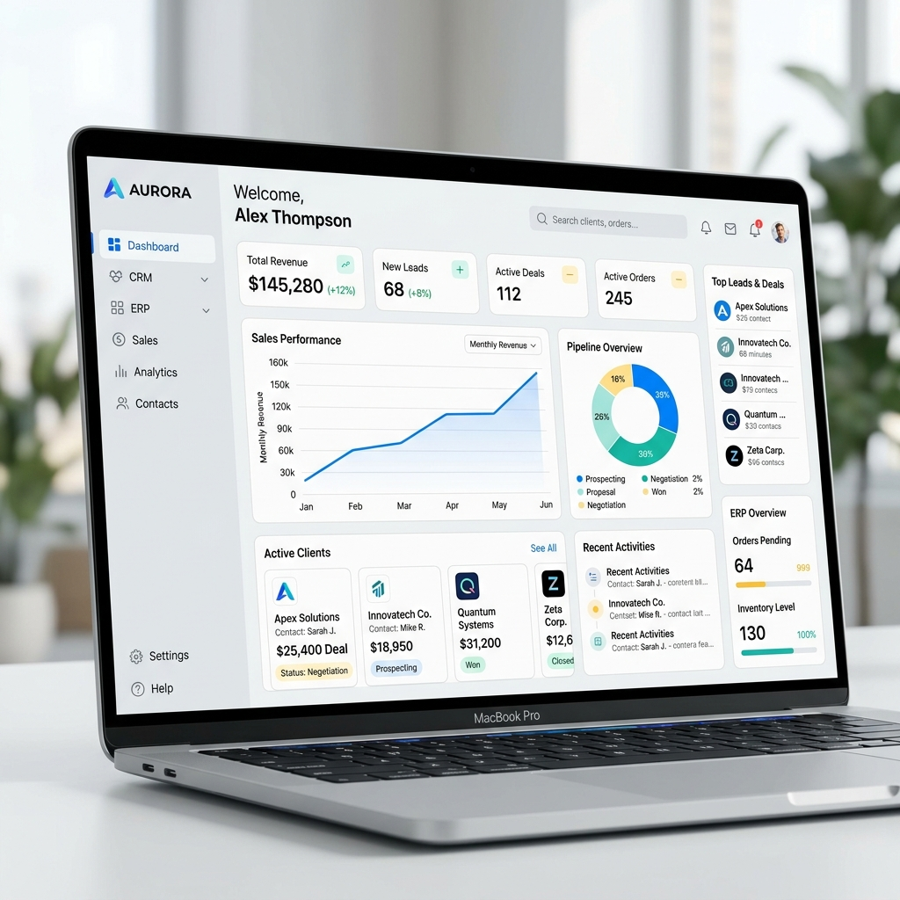

A unified enterprise-grade dashboard consolidating customer relations, logistics management, and key ERP analytics into a single responsive control hub.

CRM & ERP Dashboard is a comprehensive web portal built for global logistics operations. In large enterprise firms, personnel usually manage sales data in one app, fleet trackers in another, and invoicing in a third. This project consolidated those silos into a high-performance, single-page application dashboard.
Operations managers spent significant time logging into different platforms, copying data manually, and trying to align mismatched metrics. Poor visibility led to shipping delays, sales miscommunication, and user fatigue.
We designed a flexible sidebar-navigation system featuring dynamic widgets. Using interactive charts, custom tables with instant query filters, and a status tracking flow, users can now view, search, and manage data seamlessly.
Data fragmentation across disconnected systems cost Aegis Logistics over 180 work-hours per week in manual reconciliation. The existing software was slow, non-responsive, and required extensive training to operate.
Design a unified layout that loads complex database tables in under 1.5 seconds. Optimize common operations workflows (e.g., client lookups and invoice validation) so they require less than three mouse clicks to complete.
We shadowed 8 operations directors and sales managers during their shifts. By tracking their clicks and system navigation, we identified primary workflows and bottleneck patterns:
"I need to check critical shipment flags and approve sales targets immediately."
David is a 43-year-old regional operations director. He oversees a fleet of 50 drivers and coordinates with 20 key clients. He is constantly on the move, frequently switching between his tablet and workstation.
We structured the app layout around a three-level hierarchy (Dashboard Overview → Category Module → Action View). Common activities, like resolving delivery exceptions, can be accessed directly from dashboard alerts.
For the desktop workspace layout, we mapped out a split layout. The left column acts as a persistent collapse-friendly navigation sidebar, while the main canvas displays database modules and tables.
Enterprise software demands clear typography and strict color coding. We built a dark-slate-based typography structure coupled with an intuitive color-coding design library for active, pending, and warning states.
Our final high-fidelity design integrates tables, interactive graphs, filter fields, and expandable profile alerts, providing managers with a robust, visual command center.
Post-implementation tracking confirmed that the unified portal significantly boosted operations speeds and reduced administrative load:
Reduction in average task completion times across sales logs and logistics checkouts.
Optimization of queries and rendering reduced load latency from 4.2s to 1.4s.
Feedback score collected from operators citing massive relief in screen clutter and cognitive load.
I design and build digital products that are elegant, conversion-focused, and pleasant for users to interact with.
Get In Touch